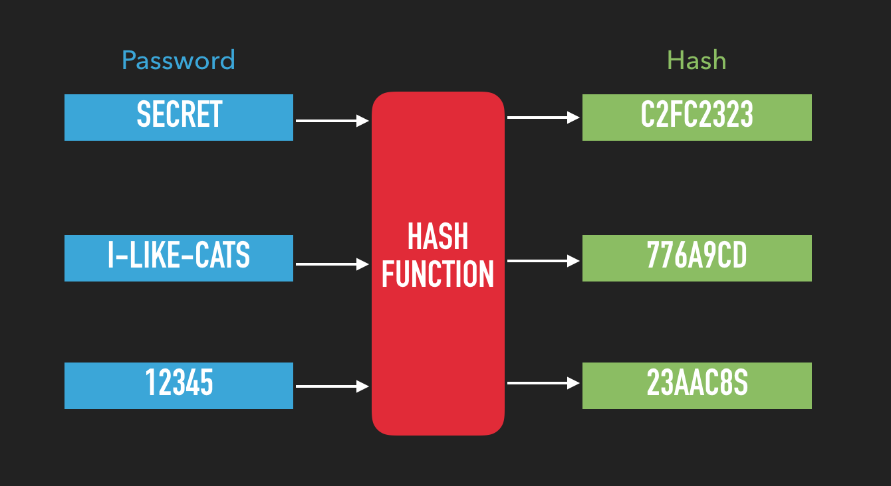
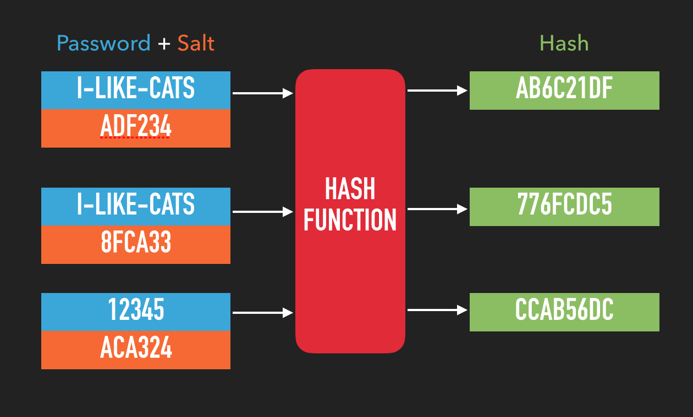
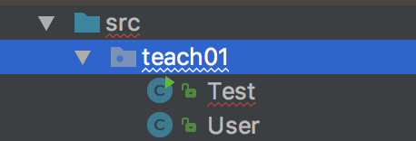

01 Prove
Java Classes and Cryptography
Objectives
Create a Java class with a constructor, getters, and setters.
Understand how Java objects are passed between functions.
Understand how to deal with Java Exceptions.
Problem: NSA Password Verification
You just landed an internship with the NSA and they've asked you to write a password verification system for their remote workers.

A (very) basic overview of password hashing.
When we add a new user to a system, we must avoid storing their password in plain text. If an attacker were to gain access to the password database, the user's accounts would be instantly compromised.
One option is to store an encrypted version of the user's password, but then we have to safeguard the encryption key so that we can decrypt the password. If the encryption key is ever compromised, the accounts are once again at risk.
What we need is a way to "encrypt" the passwords in a way that they can't be decrypted. This process is achieved with an algorithm known as a hash function. A hash function takes an input value and converts it to an output of fixed size. Once something has been "hashed" into a hash value, (also known as a checksum or digest), it is extremely difficult to retrieve the original value. (For more information on hashing vs encryption, see this Stack Overflow post.
To use hashing to protect our user accounts, we'll first hash the user's password and store the hash in the database. A good hash function will make sure that every password results in a different hash value.
Later, when the user tries to log in, we use the same hash function to calculate the hash value for the password the user types. If the new hash value matches the one we have stored, (and assuming we are using a good hash function) we can assume the initial passwords match up as well.
Now, if an attacker gains access to our database, instead of getting the user's passwords, they will just have the hashed values of the passwords. If we have chosen a good hash function, it will be really difficult for an attacker to discover the original password based on the hash alone.
Unfortunately, we still have a problem. If multiple users have the same password, they'll also end up with the same hash value. This greatly diminishes the security of our system and was a major component to the infamous Adobe password leak.
The most common way to solve this problem is instead of applying the hash function to just the password, we'll include an an additional, random input called a "salt". Since the salt is different for every user, even if multiple users choose the same password, the resulting hash values will be different.
With this system, we store the hash and the salt in our database. When the user attempts to log in, we take the password they provide and the salt from the database and give both of them to the hash function.
If the hash we get back from the function matches the one we've stored for that user, we can assume the password they provided matches the one from earlier.
Assignment
The NSA has provided you with a class containing all of the cryptography algorithms, but they want you to write the auxiliary classes used by the system.
The goal is to create a class called User which can store a password, salt, and hash value. You'll ask the user for a password, store it in a User object, and pass that object to provided hashUserPassword() function.
The hashing function will choose a random salt, then use it and the user's password to generate a cryptographic hash of their password. It will erase the password from the user object (since we don't want to store that), then store the salt and hash value in the object.
You will then ask the user to log in, and use the provided verifyPassword() function to see if the password they typed matches the original.
Part I (18%) - Become Familiar With the Code:
-
Download and explore the files for this project.
-
You start with only one Java file in this project: NSALoginController.java. It contains the cryptographic hashing functions. You don't need to understand how these functions work, but you need to know what their purpose is:
hashUserPassword(User user)- Takes an instance of theUserclass, reads its password and generates the salted hash value.verifyPassword(Users user)- Takes an instance of theUserclass and returns aBooleanindicating whether or not the User's password value matches the User's salted hash. -
You'll also notice a
docfolder. This contains the compiled javadoc comments for theNSALoginControllerclass. Open the index.html file in that folder, you'll be able to view the documentation, as well as learn more about what javadocs are and how to use them.
Part II (37.5%) - Write the User Class:
The User class will be a very basic class that just holds user information.
-
If you're using an IDE like IntelliJ, create a new project as explained in the Teach 01 assignment.
Create a new file called
User.java.Create a
publicclass definition for a class calledUser. You can find an example of the syntax for Java class definitions here, but be sure to mark your class aspublic.Add private member variables to the class to store the password, salt, and hash value. They should all be
Stringvariables.Add public getters and setters for each of these variables. Make sure you follow standard Java conventions for the getters and setters. You can find an example of the syntax for Java member variables and getters and setters here.
Add a non-default constructor to the
Userclass that takes the user's initial password as aString. The constructor should store this value in the appropriate private member variable. You can find an example of the syntax for Java constructors here.-
You'll also need to add the code found in NSALoginController.java to this project.
There are a couple of ways to do this.
Option 1: One way is to tell the IDE to add a new class to the project (File->New->Java Class), and name that class NSALoginController. Then you can just copy and paste the code from the existing file to the new one.
If you follow this option, make sure you keep the
packagedeclaration at the top of the file IntelliJ creates for you, otherwise the java classes won't be able to find each other.Option 2: Another option is to simply drag the NSALoginController.java file to the the project tree, making sure to drop it in your package root. This should be the folder directly under the src folder.
If you take this option, you'll need to add the
packagedeclaration to the top of the file.
Part III (37.5%) - Write the Test class and main():
With the user class written, it's time to test it with the NSALoginController class.
-
Create a new file called
Test.java. That file should contain apublicclass definition for a class calledTest.Note that if you're using an IDE, such as IntelliJ, instead of creating a new file to hold your
main()method, you can rename the one created for you. If you've forgotten how to do that, look back at the Teach 01 assignment.. Add a
main()method to the class. Remember to get the signature for main correct. Refer back to the team activity instructions if necessary.Have
main()prompt the user for a password. (Refer to the stretch challenge portion of the team activity instructions if you need help getting input from the user.Then, create a new instance of the
Userclass, providing the password in the constructor.Call the
hashUserPassword()function of theNSALoginControllerclass, passing in theUserobject you created. (Note that we don't need to create an instance of NSALoginController, because the hash method isstatic.)This function will hash the password, and update the
Userobject with the hash value and random salt.Please note that both
hashUserPassword()andverifyPassword()throw exceptions. In Java, we are forced to handle exceptions usetry/catchblocks. For more about exceptions in Java, and how to usetry/catchblocks, see the official Java documentation on exception handling.Once the function finishes, the object will contain the new values. This might make you think that the object is being passed by reference, but what we're actually passing is a reference to the object, which is slightly different.
Please read over this Stack Overflow post to make sure you understand that difference.
To make sure everything worked correctly, have
main()print out the user's password, salt and hash values before and after the call tohashUserPassword().Finally, ask the user to enter a password, and then use the
verifyPassword()function ofNSALoginControllerto make sure the new password matches the original.
If you've made it this far successfully, you're eligible for a 93%. To be eligible for 100% credit, complete the Stretch Challenge below.
🌟Stretch Challenge (7%)🌟
A new order from the NSA director states that all passwords must be at least eight characters long and contain at least one digit.
Because of your success implementing the User class, the director has asked you to implement this policy.
Modify the
hashUserPassword()function so that if theUserobject contains a password that violates the new policy, it will throw aWeakPasswordException.You'll have to create this exception Class yourself. For some options on how to do that, look at the answers to this Stack Overflow question.
Modify
main()to catch theWeakPasswordExceptionand prompt the user for a new password. (Note that this might require putting thetry/catchblock inside of a loop).Also note that you'll have to put the catch block of your new exception before the one for general exceptions.